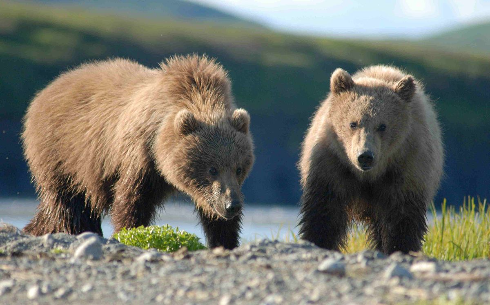
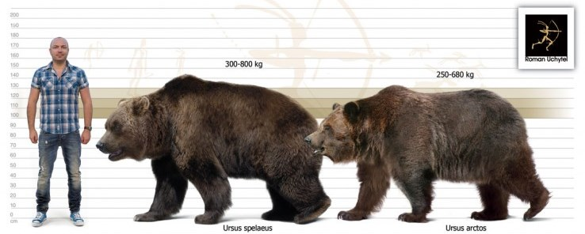
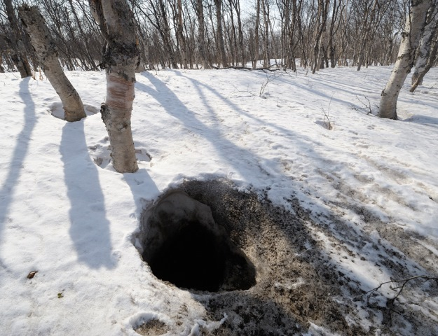

Charakterystyka
Niedźwiedź brunatny jest niesamowicie specyficznym zwierzęciem. Jego gruba sierść sprawia, iż wygląda bardzo przyjaźnie, a dodatkowo jest to jedyny gatunek z rodziny niedźwiedziowatych w Polsce. Śmiało można nazwać go olbrzymem, ponieważ waga dorosłego samca jest w stanie osiągnąć nawet 700 kg wagi i trzech metrów wysokości. Samic tego gatunku również nie można lekceważyć, osiągają one co prawda „tylko” 250 kg i dwa metry wysokości, ale raczej nikt nie chciałby zmierzyć się z nimi oko w oko.
Niedźwiedź brunatny, ma słaby wzrok jednak nadrabia to dobrym węchem, dlatego jeśli przebywasz w miejscu, w którym występują niedźwiedzie, nigdy nie trzymaj jedzenia przy sobie (najlepiej zawieś je na drzewie, w odległości 100m, od Twojego schronienia). Nie zaleca się również brania ze sobą jabłek, jeśli udajemy się w tereny zamieszkane przez niedźwiedzie - strasznie je uwielbiają i zrobią wszystko, żeby je zdobyć!
Wygląd
Sierść niedźwiedzia brunatnego jest, jak sama nazwa wskazuje, ciemnobrązowa, choć niektóre jego podgatunki mogą mieć futro jaśniejsze. Niedźwiedź jest potężnie umięśniony i bardzo silny.
Z racji dużych rozmiarów niedźwiedź ma bardzo szerokie dłonie i stopy. Wyróżnia go sposób chodu, bo porusza się krocząc na zmianę obu lewymi bądź obu prawymi kończynami. Z kolei niedźwiedzie łapy są podbite nagą i twardą skórą, pełniącą rolę izolatora cieplnego i amortyzatora. Same łapy są uzbrojone w pazury, które mają długość nawet od 3 do 7 centymetrów. Pazury przydają się niedźwiedziom do ataku i obrony, ale również do rozdzierania zdobyczy, wygrzebywania ziemi i rozrywania starych pni w poszukiwaniu pożywienia oraz przygotowania gawry.
Głowa niedźwiedzia jest ciężka z krótkimi uszami, dużym, kwadratowym pyskiem i małymi oczami. Mocne kły przydają się do rozrywania mięsa, a trzonowce, ułatwiają spożywanie pokarmu roślinnego. Co ciekawe wiek niedźwiedzia można określić właśnie po zębach. Liczy się go jak wiek ściętego drzewa – po słojach. W przypadku zęba, po jego przecięciu widać ciemne i jasne paski, których kolor różni się w zależności od pory roku. Ich liczba jest równoznaczna z wiekiem niedźwiedzia.
- Długość tułowia z głową: samiec 160–280 cm, samica 150–210 cm
- Ogon: 5–21 cm
- Wysokość: 90-140 cm
- Masa ciała: samce 250–500 kg (niekiedy 700 kg), samice 180–300 kg
- Ciąża: ok. 8 miesięcy (co dwa lata)
- Miot: 1–3 niedźwiadków, o długości ok. 25 cm
- Czas uzależnienia od matki: 18 miesięcy. Pierwsze tygodnie po narodzinach młode spędzają wtulone w nogi matki tak, że nawet nie dotykają podłoża.
- Pożywienie: wszystkożerny – miód , łososie , padlina , duże ssaki jak łosie i jelenie , czasem gryzonie , sporadycznie trawa, grzyby , ptasie jaja
- Długość życia: do 30 lat w stanie dzikim, do 50 lat w niewoli
Legowisko
Na zimę przygotowuje sobie legowisko zwane gawrą i zapada w sen zimowy, z którego od czasu do czasu może się budzić. Żyje samotnie, tylko w okresie godowym w parach. W zimie samica rodzi zwykle 2–3 młodych, którymi opiekuje się aż do następnego miotu . Samica z młodymi bywa szczególnie niebezpieczna.